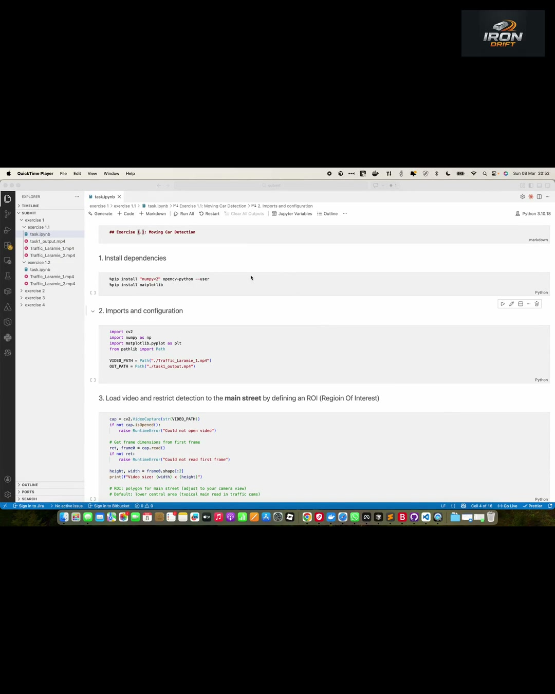

Facebook Feed (Recommended)
Built and verified- Best mobile feed coverage among feed-safe ratios.
- Our actual encoded output uses this size.
Client review page showing common Meta/Facebook video aspect ratios and how one encoded creative is fitted in each placement.
Canonical deliverable in this project is output.mp4 at 1080x1350 (4:5).
Generated file: output.mp4
Verified via ffprobe: codec_name=h264, width=1080, height=1350,
display_aspect_ratio=4:5, pix_fmt=yuv420p, audio aac (48 kHz, mono).
Visual proof image: proof_frame.jpg (single frame extracted from output.mp4).
